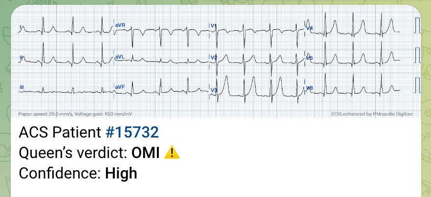
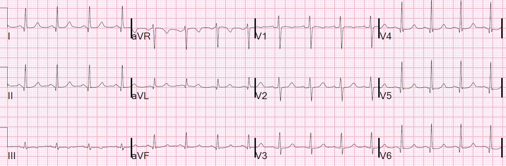
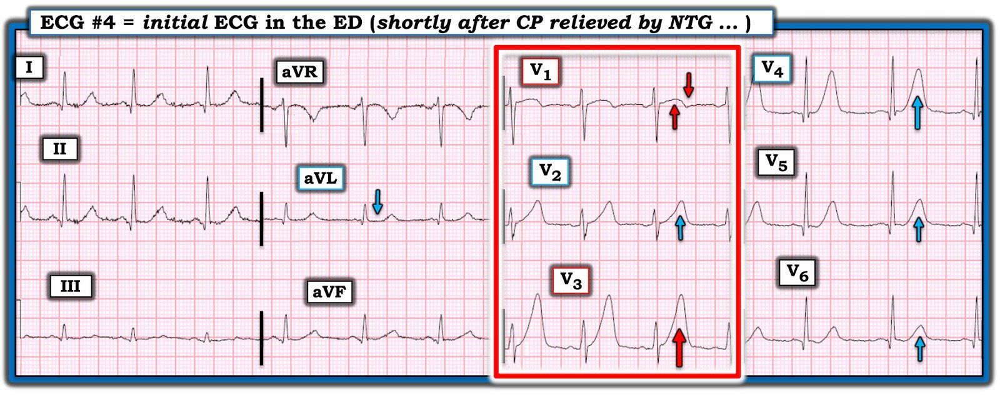

27/04/2025 — Điểm HEART bằng 0. Máy tính đọc điện tâm đồ bình thường. Troponin không phát hiện được. Siêu âm tim đánh dấu mô (speckle tracking) bình thường.
Bản dịch tiếng Việt của bài "HEART Score Zero. Computer Normal ECG. Troponin Undetectable. Speckle Tracking Echo normal." – Dr. Smith’s ECG Blog. Giữ nguyên toàn bộ 9 hình ảnh và 3 video của bản gốc.
Một phụ nữ ngoài 30 tuổi hoàn toàn khỏe mạnh, không có yếu tố nguy cơ tim mạch, đột ngột đau vùng cơ thang hai bên, lan vòng ra tới cổ họng. Cơn đau hết sau khoảng 5 phút, nhưng sau đó tái phát và kéo dài liên tục hơn một giờ. Bệnh nhân gọi 911.
Đội cấp cứu ngoài viện (EMS) đã ghi các điện tâm đồ này:
Thời điểm 0:

Đây là thuật toán Zoll
Tôi đã gửi bản ghi này cho Queen of Hearts:


Hãy xem bài báo gần đây của chúng tôi về hiệu năng của Queen of Hearts trên các điện tâm đồ biểu hiện OMI nhưng được thuật toán thông thường đọc là bình thường:
Artificial Intelligence Detection of Occlusive Myocardial Infarction from Electrocardiograms Interpreted as “Normal” by Conventional Algorithms (Trí tuệ nhân tạo phát hiện nhồi máu cơ tim do tắc từ các điện tâm đồ được thuật toán thông thường đọc là “Bình thường”)
Thời điểm = 13 phút

Sóng T ở V3 không cao hơn, nhưng đầy đặn hơn do đoạn ST thẳng hơn
Hình ảnh này rất đáng nghi tắc LAD giai đoạn sớm Không được nhận diện là STEMI, nhưng cũng không được đọc là bình thường
Đây là thuật toán Zoll
Thời điểm = 24 phút

Zoll không nhận ra nhồi máu cơ tim cấp, nhưng cũng không đọc là bình thường
Các điện tâm đồ trước viện này đã không được xem.
Bệnh nhân đến khoa cấp cứu (ED).
Cơn đau hết hoàn toàn sau khi dùng nitroglycerin
Ít phút sau, điện tâm đồ này được ghi tại khoa cấp cứu khi bệnh nhân mới hết đau được một lúc ngắn:

Điện tâm đồ này có giá trị chẩn đoán OMI do tắc LAD
Tuy nhiên, các sóng T vẫn lớn bất thường; máy tính gần như không bao giờ nhận ra điều này. Sóng T ở V2 nhỏ hơn. QTc là 444 ms.
STE 60 V3 = 1.5 mm, biên độ sóng R ở V4 = 15 mm, QRSV2 = 8.5
Giá trị công thức là 19.38, cho thấy tắc LAD (Ngưỡng cắt chính xác nhất là 18.2 — giá trị lớn hơn 18.2 có xác suất cao là tắc LAD).
Theo hầu hết các quy tắc, bệnh nhân này có điện tâm đồ không có giá trị chẩn đoán.
Tuy nhiên, nếu chú ý đến các chi tiết tinh tế, đặc biệt khi so sánh với các điện tâm đồ trước viện chưa được xem, thì điện tâm đồ này rất đáng lo ngại.
Và với khả năng nhận diện hình ảnh của chuyên gia như tôi, đây chắc chắn là OMI do tắc LAD
Vì tôi đã huấn luyện Queen of Hearts, nên “bà ấy” biết đây là OMI:

Troponin đầu tiên thấp hơn giới hạn phát hiện (LoD).
Nếu bạn dùng một công cụ như điểm HEART:
1. H Bệnh sử (History): Bệnh nhân đau không điển hình (vùng cơ thang) (điểm = 0)
2. E Điện tâm đồ (EKG): điện tâm đồ âm tính (điểm = 0)
3. A Tuổi (Age): = 0
4. R Yếu tố nguy cơ (Risk factors) = 0
5. T: Troponin = 0 [troponin đầu tiên (loại thế hệ hiện hành, không phải độ nhạy cao) thấp hơn giới hạn phát hiện).
Tổng điểm HEART = 0. Nguy cơ biến cố bất lợi trong 30 ngày thấp hơn 1.7%. Một số người có thể cho bệnh nhân về nhà.
Nhưng có thể bệnh nhân đang bị tắc LAD cấp và tình trạng sẽ còn nặng hơn nữa.
Các bác sĩ đã làm siêu âm tim tại giường và thậm chí còn dùng kỹ thuật đánh dấu mô (speckle tracking) để đánh giá sức căng (strain):
Tôi nghĩ có thể có rối loạn vận động thành trước, nhưng điều này rất khó. Họ đọc là bình thường.
Đây là một vài hình ảnh có sức căng (strain), tức “đánh dấu mô” (speckle tracking), trên siêu âm tim tại khoa cấp cứu:
Với tôi, các hình này trông như có rối loạn vận động thành trước, nhưng tôi đã đưa cho một bác sĩ nghiên cứu sinh (fellow) siêu âm của chúng tôi, người rất quan tâm đến lĩnh vực này, xem.
Cô ấy nói:
Ca này khó. Tôi hiểu ý anh, lúc đầu khi nhìn hình ảnh, tôi cũng nghĩ có rối loạn vận động thành trước. Nhưng khi xem kỹ hơn, tôi nghi rằng có lẽ thành trước chỉ đơn giản là không được đánh dấu (tracking) tốt. Trong tâm thu, có thể thấy thành trước đi xuống và ra ngoài vùng đang được đánh dấu (nhiều hơn so với các thành khác được đánh dấu). Dù các giá trị sức căng trên đồ thị có hơi lệch (thành sau cũng vậy), chúng vẫn nằm trong khoảng giá trị (khoảng -18) mà theo y văn tim mạch được coi là không thiếu máu cục bộ, tôi tin là vậy. Dù vậy tôi cũng từng sai rồi! Nên có thể tôi đang đọc sai đoạn clip. Nếu là tôi, tôi sẽ lấy các giá trị ở mức van hai lá, cơ nhú và mỏm (tất cả trên mặt cắt trục ngắn cạnh ức – PSS). Ngoài ra, thu hẹp vùng được đánh dấu sẽ giúp nhận diện các thành tốt hơn nhiều.
Như tôi đã viết, troponin đầu tiên thấp hơn giới hạn phát hiện.
Bệnh nhân vẫn hết đau, và được nhập viện mà không ghi thêm điện tâm đồ liên tiếp nào.
Khi còn nghi ngờ, luôn luôn phải ghi các điện tâm đồ liên tiếp. Siêu âm tim tại giường là không đủ.
Ở thời điểm = 240 phút (4 giờ), troponin lần hai trả về 1.15 ng/mL. Kết quả này mới thúc đẩy việc ghi điện tâm đồ này:


Rất may là LAD của bệnh nhân đã tự tái tưới máu. Tình trạng đã không tiến triển thành STEMI toàn phát với mất thành trước, như trong ca này.
Ngoài ra, việc duy trì tình trạng hết đau không bảo đảm rằng động mạch đã thông. Xem ca này.
Lúc này đã làm siêu âm tim chính thức có cản âm:
Phân suất tống máu thất trái ước tính bình thường, 65%.
Rối loạn vận động thành khu trú - vách đoạn xa và mỏm.
Bệnh nhân được điều trị nội khoa như NSTEMI, chờ thông tim vào ngày hôm sau; kết quả cho thấy mảng xơ vữa loét và hẹp 60% có huyết khối ở LAD, đoạn sau nhánh chéo thứ nhất. Tổn thương đã được đặt stent.
Những điểm cần học:
1. Luôn ghi các điện tâm đồ liên tiếp khi còn bất kỳ nghi ngờ nào về những gì đang diễn ra.
2. Hãy dùng công thức 4 biến!!
12 Example Cases of Use of 3- and 4-variable formulas, plus Simplified Formula, to differentiate normal STE from subtle LAD occlusion (12 ca ví dụ sử dụng công thức 3 biến và 4 biến, cùng công thức rút gọn, để phân biệt ST chênh lên bình thường với tắc LAD kín đáo)
3. Luôn tìm và xem các điện tâm đồ trước viện. Chúng cung cấp thông tin cực kỳ giá trị.
4. Sóng T tối cấp vẫn tồn tại một thời gian sau khi động mạch được tái tưới máu. Tôi luôn nói rằng “bạn sẽ gặp sóng T tối cấp cả ‘trên đường đi lên’ (trước khi ST chênh lên) lẫn ‘trên đường đi xuống’ (khi ST chênh lên đang hồi phục).
5. Rối loạn vận động thành rất khó thấy, ngay cả với công nghệ đánh dấu mô (Speckle Tracking) tiên tiến. Cần có một siêu âm cản âm chất lượng tốt và người đọc là chuyên gia.
6. Ca này không minh họa điều đó, nhưng rối loạn vận động thành có thể biến mất sau khi tái tưới máu tự phát (xem ca này).
7. Bệnh nhân tắc mạch thoáng qua có thể chỉ biểu hiện STEMI thoáng qua trên điện tâm đồ. Các lần troponin sau đó có thể đều âm tính và siêu âm tim chính thức sau đó có thể bình thường. Xem ca này.

===================================
BÌNH LUẬN CỦA TÔI, bởi KEN GRAUER, MD (27/4/2025):
===================================
Tôi thấy thú vị khi định kỳ nhìn lại những lần đọc điện tâm đồ của mình (và những lần đọc của người khác) từ nhiều năm trước. Tôi hoàn toàn thừa nhận rằng làm như vậy mang lại cho tôi không ít “khoảnh khắc ngượng ngùng” (khi tôi tự hỏi “Sao mình lại có thể nói như thế?” ). Nhưng đó là chuyện khi ấy — còn bây giờ là bây giờ.
- Ca hôm nay là một bài “đăng lại“ từ ngày 28 tháng Ba năm 2017 — tức là cách đây hơn 8 năm …
- “OMI Manifesto” (Tuyên ngôn OMI) được các bác sĩ Meyers, Weingart và Smith công bố ít lâu sau bài đăng lại hôm nay, trong bài ngày 1 tháng Tư năm 2018 của Dr. Smith’s ECG Blog.
- Trong 8 năm kể từ bài đăng lại hôm nay — các bác sĩ Smith, Meyers, McLaren và những người khác đã công bố ngày càng nhiều tài liệu tham khảo liên quan ủng hộ mô hình OMI (OMI Paradigm), cho thấy mô hình này vượt trội hơn hẳn mô hình STEMI lỗi thời và kém nhạy (danh sách này đã có hơn 80 tài liệu tham khảo, và con số này liên tục tăng — tất cả đều được gắn link thuận tiện cho bạn trong OMI Literature Timeline (Dòng thời gian y văn về OMI) của Dr. Smith, nằm ở Thẻ Menu TRÊN CÙNG của mọi trang trong ECG Blog này).
Điện tâm đồ Đầu tiên tại khoa cấp cứu của ca Hôm nay:
Theo Dr. Smith — 3 điện tâm đồ trước viện trong ca hôm nay đã bị “thất lạc”, và vì vậy không được các bác sĩ khoa cấp cứu xem. Kết quả là — việc ra quyết định ban đầu dựa trên điện tâm đồ ở Hình 1 (là điện tâm đồ thứ 4 trình bày ở trên trong phần bàn luận của Dr. Smith — nhưng là điện tâm đồ đầu tiên được ghi tại khoa cấp cứu). Tôi tập trung bình luận vào điện tâm đồ đầu tiên tại khoa cấp cứu này:
- Việc ra quyết định ban đầu tại khoa cấp cứu rất có thể đã bị ảnh hưởng bởi độ tuổi trẻ (ngoài 30 tuổi) của người phụ nữ trước đó khỏe mạnh (không có yếu tố nguy cơ) này — bệnh nhân đến với cơn đau vùng cơ thang lan lên cổ họng, nhưng không lan xuống ngực.
- Cơn CP (đau ngực – Chest Pain) của bệnh nhân hết hoàn toàn sau khi dùng NTG.
- Điện tâm đồ #4 (ở Hình 1) — được ghi rất ngay sau khi dùng NTG (nên chúng ta không biết liệu các thay đổi ST-T có thể trông rất khác hay không nếu chờ thêm vài phút “hết đau” nữa).
- VÀ — Hãy nhớ rằng ca hôm nay là bài đăng lại từ 8+ năm trước.
Tôi thấy bài đăng lại hôm nay rất sâu sắc ở chỗ làm nổi bật những gì chúng ta hy vọng ít nhất cũng đã được cải thiện — so với cách thực hành vào năm 2017.


Những gì Chúng ta Hy vọng đã được Cải thiện:
- Thật khó biết vì sao 3 điện tâm đồ trước viện lại bị “thất lạc”. Hy vọng rằng vào năm 2025, khi vận chuyển một “bệnh nhân cần loại trừ nhồi máu cơ tim” có điện tâm đồ trước viện bất thường rõ ràng, một trong những việc ưu tiên số 1 của nhân viên EMS khi đến khoa cấp cứu — là bàn giao và trực tiếp đưa các bản ghi đó cho bác sĩ khoa cấp cứu xem.
- Hy vọng rằng vào năm 2025, nhiều bác sĩ hơn đã biết rằng có tới 25% giá trị Troponin ban đầu ở bệnh nhân STEMI có thể bình thường (Wereski, Smith, và cs. — JAMA Cardiol 5(11): 1302-1304, 2020). Vì vậy, đặc biệt ở một bệnh nhân như ca hôm nay, khi triệu chứng khởi phát quá gần và ngắn ngủi — không nên bất ngờ khi Troponin ban đầu bình thường.
- Hy vọng rằng các điện tâm đồ liên tiếp (ghi lại điện tâm đồ ban đầu tại khoa cấp cứu trong vòng 15-30 phút, và thường xuyên khi cần sau đó) giờ đây đã trở thành thường quy ở tuyệt đại đa số các trung tâm (thay vì chậm trễ hơn 4+ giờ như trong ca hôm nay, cho tới khi Troponin tăng cuối cùng mới trả về và thúc đẩy việc ghi lại điện tâm đồ ban đầu tại khoa cấp cứu).
- Hy vọng rằng một bản ghi bất thường như điện tâm đồ đầu tiên tại khoa cấp cứu (đặc biệt ở bệnh nhân có triệu chứng mới) của ca hôm nay — sẽ được nhận ra kịp thời.
- Và hy vọng rằng các bác sĩ cấp cứu giờ đây nhận ra rằng mặc dù là một phụ nữ trẻ không có yếu tố nguy cơ làm giảm nguy cơ biến cố tim cấp — điều đó không loại trừ nguy cơ này (như ca hôm nay đã chứng minh một cách thuyết phục). Điều này càng đúng khi xét đến mức độ bất thường của điện tâm đồ ban đầu tại khoa cấp cứu hôm nay.
Điện tâm đồ Đầu tiên tại khoa cấp cứu Hôm nay:
Việc nhận ra OMI do tắc LAD cấp cho tới khi chứng minh được điều ngược lại — phải diễn ra trong vòng vài giây khi nhìn điện tâm đồ ở Hình 1:
- Sau khi xác định nhịp xoang bình thường — “mắt” tôi lập tức bị thu hút vào sóng T tối cấp ở chuyển đạo V3. Chiều cao của sóng T này đúng là gấp đôi chiều cao sóng R ở chuyển đạo này — kèm QTc kéo dài và đáy sóng T cực rộng. Ở một bệnh nhân có triệu chứng mới — không thể nào sóng T khổng lồ, “quá đầy đặn” (hypervoluminous) này lại là một biến thể bình thường.
- Tiếp theo, “mắt” tôi bị thu hút vào ST-T ở chuyển đạo V1 — cho thấy ST dạng vòm (coving), ST chênh lên tại điểm J và phần cuối sóng T đảo ngược. Không thể nào đây là hình thái ST-T bình thường ở chuyển đạo V1.
- Khi đã biết rằng ở bệnh nhân có triệu chứng mới này, các chuyển đạo V1 và V3 rõ ràng là tối cấp — sẽ dễ dàng nhận ra bất thường ST-T ở từng chuyển đạo ngực còn lại.
- Sóng T ở chuyển đạo V2 cao hơn sóng R ở chuyển đạo này — và sóng T này rõ ràng “đầy đặn hơn” ở đỉnh và rộng hơn nhiều ở đáy so với mức đáng lẽ phải có, xét theo kích thước rất khiêm tốn của phức bộ QRS ở chuyển đạo này.
- Sóng T ở chuyển đạo V4 vẫn rất lớn (cao hơn 10 mm). Và dù kích thước sóng T tương đối nhỏ hơn ở các chuyển đạo V5,V6 — tôi vẫn đọc các sóng T ở chuyển đạo ngực bên này là quá “đồ sộ” so với mức tôi thường mong đợi dựa trên hình dạng QRS ở các chuyển đạo này.
- Một dấu hiệu tinh tế nhưng hỗ trợ thêm được thấy ở chuyển đạo aVL, cho thấy rõ đoạn ST thẳng đuỗn bất thường.
Nhận định: Ở bệnh nhân có triệu chứng mới này — điện tâm đồ đầu tiên tại khoa cấp cứu đã có giá trị chẩn đoán OMI do tắc LAD cấp cho tới khi chứng minh được điều ngược lại, bất kể không có yếu tố nguy cơ — và bất kể Troponin ban đầu bình thường.
- Vì cơn CP của bệnh nhân vừa được NTG làm giảm ngay khi đang ghi điện tâm đồ #4 — ghi lại điện tâm đồ ban đầu tại khoa cấp cứu này trong vòng 10-15 phút tiếp theo có lẽ sẽ xóa tan mọi nghi ngờ còn lại về chẩn đoán, vì hết hoàn toàn triệu chứng nhiều khả năng báo hiệu tái tưới máu tự phát, mà thường ngay sau đó sẽ kèm theo sự hồi phục của các thay đổi tối cấp trên điện tâm đồ.
- Tôi biết rằng mình đã học được rất nhiều về chẩn đoán OMI cấp trong 8 năm qua.